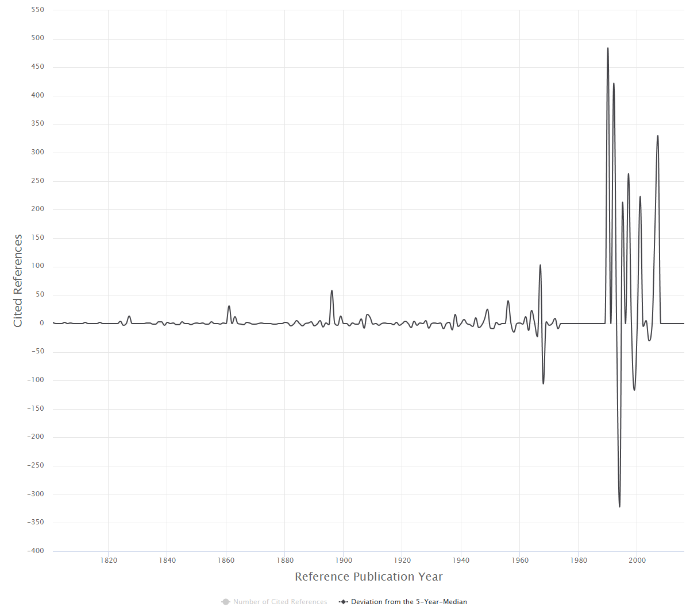

Which are the most important papers in the history of a field?
On whose shoulders of giants does an author stand? Where to look for
the intellectual roots of a research topic? These questions can be
answered by using the program CitedReferencesExplorer (CRExplorer).
The CRExplorer uses data from Web of Science (Clarivate
Analytics) or Scopus (Elsevier) as input. Publication sets have to be
downloaded including the references cited. The program focusses on
the analysis of the cited references, in particular on the referenced
publication years. Over time, "citation classics" of a field become
more pronounced. When the aggregated citations are plotted along the
time axis, one obtains a "spectrogram" with distinct peaks.
CRExplorer visualizes this spectrogram, cleans the cited references
(so-called "disambiguation"), and uses a smoothing algorithm to
suppress the noise.
The method Reference Publication Year Spectroscopy (RPYS) was
developed by Werner Marx, who used it for the first time in the field
of meteorology (see
his study on page 11). For demonstration of the potential of the
method, figure 1 shows the citation classics concerning the discovery
of the “greenhouse effect”, a basic component of climate change.
Figure 1: Citation classics concerning the discovery of the
“greenhouse effect” and appearing as peaks in the spectrogram
provided by the CRExplorer.
We downloaded from the Web of Science 3,244 publications
containing the term "greenhouse effect” in the title or in the
abstract or as a keyword. These papers contain 81,126 references to
publications published over 379 years. The graph produced by the
CRExplorer shows three distinct peaks during the 19th century and a
few others during the first half of the 20th century.
The first three pronounced peaks go back to the following
publications:
Fourier’s 1827 paper, entitled "Mémoire sur les températures
du globe terrestre et des espaces planétaires", can be seen as the
first decisive publication. Fourier found that the earth is warmer
than expected. He attributed this to the phenomenon that the earth’s
atmosphere is transparent for solar radiation but not for the
infrared radiation from the ground. Thus, he discovered the
(natural) greenhouse effect.
Tyndall's (1861) study, entitled "On the absorption and
radiation of heat by gases and vapours, and on the physical
connexion of radiation, absorption, and conduction", proved that the
earth's atmosphere has a greenhouse effect. He concluded that water
vapour is the principal gas controlling air temperature.
Arrhenius (1896, entitled "On the influence of carbonic acid
in the air upon the temperature of the ground") published the first
study with a calculation of how changes in the levels of carbon
dioxide in the atmosphere can alter the surface temperature through
the greenhouse effect.
The subsequently following peaks can be assigned to the works
of Chamberlin (1898), Arrhenius (1908), and Callendar (1938, 1949).
These are citation classics in the climate change literature. They
deal with the possibility that climatic change results from changes
in the concentration of atmospheric carbon dioxide—thereby supporting
the calculationtheory of Arrhenius. Whereas Chamberlin (1898) and
Callendar (1938, 1949) have been written for scientists, Arrhenius
(1908) book was directed at a general audience.
In sum, the discovery of the earth’s greenhouse effect and the role
of carbon dioxide and water vapor as greenhouse gases are no recent
findings but date back to the beginning of the nineteenth century.
(See here
for more information.)
Running CRExplorer & System Requirements
CRExplorer requires a system with Java 8 support. There are two
options to run CRExplorer in the GUI mode:
Java Web Start: Click the CRExplorer
Start link to launch CRExplorer directly from this web page using
Java Web Start Launcher. If you start CRExplorer for the first time
your computer system will likely refuse to run the program due to
security reasons. If so, you have to put the URL http://www1.hft-leipzig.de in
the list of exceptions in your Java configuration. Please follow the
official Java instructions on
How can I configure the Exception Site List?. This has to be done
only once.
Download: You can download
a runnable JAR file. On most systems a double click on the JAR file
will start CRExplorer. If you want to run the JAR file from command
line please refer to the official Java documentation on
Running JAR-Packaged Software. Here you can also set the heap space
size if you are processing large files.
If you want to employ CRExplorer's script language, you can download
a runnable JAR file that can be started from the command line as
follows:
where [myscript.crs] should be replaced by the user's script filename.
Releases
CRExplorer version 1.8.2 was released on February 1, 2018. This
version includes the following new features and improvements:
Sequence: To reveal impact sequences over time for
cited references, cited references are classified as on average
("0"), above average ("+"), and below average ("-") citation impact
in citing years. The benchmark is the mean citation impact of all
other cited references published in the same year. For example, the
sequence [---+++000] means that the cited reference has been cited
below average in the first three citing years, above average in the
next three years, and on average in the last three citing years.
Types of sequences: The sequences are used to
identify specific types in terms of the symbols ("+", "-", "0"). The
types are labelled as follows: sleeping beauty with low or no
citation impact over a longer initial period and high citation
impact later; constant performer with a constant and
considerable amount of citation impact over time; hot paper
with high citation impact directly after the publication and low
citation impact later; life cycle with very different
citation impact across the citing years.
Samples: In many cases, the full dataset from Web of
Science or Scopus (the population) cannot be completely imported in
the program because the available memory on the computer is
restricted. Thus, the user has the new option to reduce the dataset
by loading only a sample from the population. Three samples can be
drawn from the population: random, systematic, or cluster
sample.
Script language: CRExplorer provides a tailored
script language that allows the application of the most important
functions. This can be useful for recurring experiments using different
data sets or for processing large volumes of data.
Users can execute scripts from the command line. The use of the script language
is explained in the handbook.
CRExplorer version 1.7.7 was released on June 30, 2017. This
version includes the following new features and improvements:
Publications: Users can specify (under "File" -
"Settings" - "Import/Export") if CRExplorer should include
publications that do not have any cited references.
Settings: Several enhancements in the settings incl.
chart layout options (font size, stroke size).
CRExplorer version 1.7.5 was released on May 31, 2017. This
version includes the following new features and improvements:
Citing Publications: Users can inspect the list of
citing publications for selected cited references via "View" -
"Citing Publications".
Searching: Users can do keyword searches for cited
references (including wildcards such as *).
Indicators: Three indicators are included which show
in how many citing years the cited publication (cited reference)
belongs to the 50%, 25%, or 10% most cited publications – compared
to all other cited publications (cited references) which have been
appeared in the same cited year.
Copy + Paste: Users can copy selected cited
references to clipboard (Ctrl+C) and paste it in other programs
(e.g., Excel).
New Chart layout: Beside the standard chart
(JFreeChart), CRExplorer now employs a new web-based, interactive
chart type (HighCharts). Users can switch between the types in the
"File" - "Settings" menu.
User Interface: CRExplorer's GUI is now based on
JavaFX.
Handbook: A handbook is
available which explains the elements and functions of the program.
CRExplorer version 1.6.8 was released on August 29, 2016. This
version includes the following new features and improvements:
Performance: Performance improvements (e.g., for data
clustering) using multiple threads on multi-core machines.
Java 8: CRExplorer requires a Java 8 run-time.
CRExplorer version 1.6.7 was released on July 5, 2016. This version
includes the following new features and improvements (see New features of
CRExplorer for a detailed description):
Scopus: Using “File” – “Import” – “Scopus”,
CRExplorer reads files from Scopus. The file format “CSV” (including
citations, abstracts and references) should be chosen in Scopus for
downloading records.
Export facilities: Using “File” – “Export” –
“Scopus”, CRExplorer exports files in the Scopus format. Using
“File” – “Export” – “Web of Science”, CRExplorer exports files in
the Web of Science format. These files can be imported in other
bibliometric programs (e.g. VOSviewer).
Space bar: Select a specific cited reference in the
cited references table, press the space bar, and all bibliographic
details of the CR are shown.
Internal file format: Using “File” – “Save”, working
files are saved in the internal file format “*.cre”. The files
include all data including matching results and manual matching
corrections. The files can be opened by using “File” – “Open”.
Andreas Thor University of Applied Sciences for
Telecommunications Leipzig (HfTL) Gustav-Freytag-Str. 43-45
04277 Leipzig, Germany Email: thor@hft-leipzig.de
Lutz Bornmann Division for Science and Innovation Studies
Administrative Headquarters of the Max Planck Society
Hofgartenstr. 8 80539 Munich, Germany Email:
bornmann@gv.mpg.de
Werner Marx Max Planck Institute for Solid State Research
Information Service Heisenbergstrasse 1 70506
Stuttgart, Germany Email: w.marx@fkf.mpg.de
With further support of (alphabetically ordered)
Robin Haunschild Max Planck Institute for Solid State Research
Heisenbergstr. 1 70569 Stuttgart, Germany Email:
R.Haunschild@fkf.mpg.de
Loet Leydesdorff Amsterdam School of Communication Research
(ASCoR) University of Amsterdam P.O. Box 15793
1001 NG Amsterdam, The Netherlands Email: loet@leydesdorff.net
{kind=link}